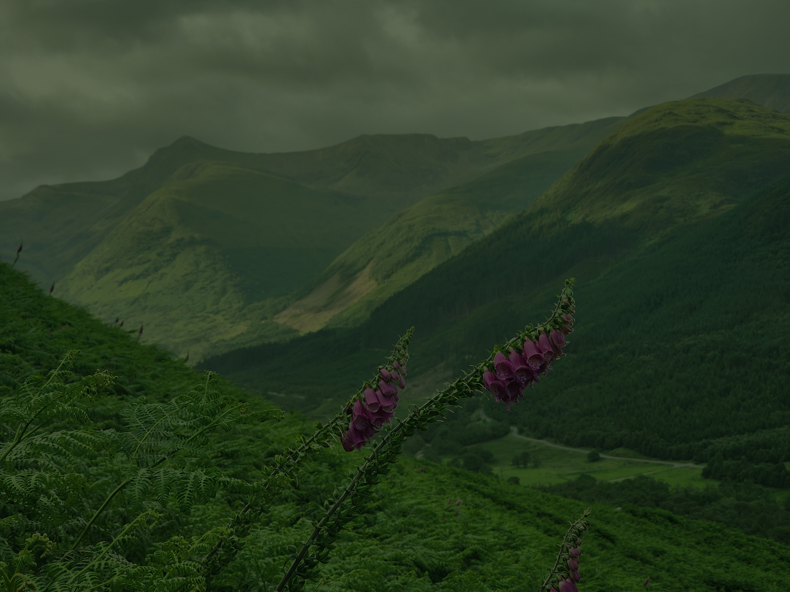

Laboration 1.2
Redovisning av bilder
Nedan följer de bilder jag redigerat i Photopea. Originalet kan ses bredvid den redigerade bilden.
Bild 006:


Beskrivning av vad som gjorts:
- Ökat exponering för att få in mer ljus
- Ökat mättnad för mer färg
- Med en mask över vissa delar, ökat gröna
och röda toner på andra partier
för mer liv i bilden - Beskurit för ett nytt fokus
Bild 001:


Beskrivning av vad som gjorts:
- Ökat exponering för att få in mer ljus
- Minskat på de gröna tonerna i färgbalansen
- Justerat horisonten att bli jämnare
- Med lagermask ändrat färger på en av blommorna
- Ökat mättnaden för mer liv och färg
- Beskurit för att kompensera för justering av horisont
Bild 001:


Beskrivning av vad som gjorts:
- Med patch och stamp tagit bort person i förgrunden
- Justerat färgbalansen
- Ökat exponeringen för mer ljus
- Beskurit för annan komposition